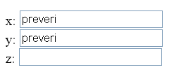
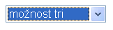
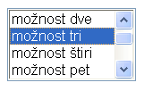

Vse znanje, ki smo ga osvojili doslej, nam omogoča le statično prikazovanje podatkov. Vsakdo, ki se je že kdaj podal na Internet, bo vedel, da ogromno spletnih strani ponuja možnost določene interakcije z uporabnikom. V tem pogledu lahko gledamo na spletne strani kot neke vrste programsko opremo, kajti uporabnik lahko izvaja opravila ali vpliva na vsebino na način, ki presega običajno tiskano vsebino. Medtem ko spletne povezave uporabniku ponujajo le povsem osnovno zmožnost izbire, mu omogočajo obrazci (angl. form) vnos praktično poljubnih podatkov. Uporabnost takšnih obrazcev zajema vse od preprostih sistemov za vnos naročil, pa do dinamičnega oblikovanja spletnih strani. Obrazci so že dolgo vsakdanjost spletnih strani in za sodobnega spletnega oblikovalca je nujno, da jih obvlada.
Obrazci se pogosto uporabljajo v povezavi z določenimi strežniškimi programi, ki obdelajo podatke, ki jih uporabnik vanje vnese. Da se to lahko zgodi, mora uporabnik obrazec oddati. Ker se mi s programiranjem na strani strežnikov ne bomo ukvarjali, tudi ne bomo obravnavali različnih postopkov oddajanja obrazcev. Ogledali si bomo le primer, ko vsebino obrazca pošljemo na e-poštni naslov. Poleg tega bomo obrazce kasneje uporabljali kot način interakcije uporabnika s programčki JavaScript.
Obrazec ustvarimo z elementom form. Vanj lahko vstavljamo običajno besedilo, ostale elemente jezika XHTML, kot na primer tabele, in elemente za vnos podatkov, ki jim pravimo vnosna polja (angl. form field). Če želimo, da bo uporabnik lahko obrazec oddal, mu moramo lastnost action nastaviti na spletni naslov, kamor naj se obrazec pošlje. To je navadno naslov strežniškega programa, ki bo poslane podatke avtomatično obdelal, lahko pa je e-poštni naslov. Mi bomo uporabljali le e-poštni naslov. Nastaviti moramo tudi lastnost method, ki predstavlja način pošiljanja podatkov. Slednjo bomo za naše potrebe nastavili na vrednost post. Ta način je primeren za pošiljanje večje količine podatkov, saj se podatki pošiljajo ločeno od spletnega naslova. Ker bomo naše obrazce pošiljali po elektronski pošti, moramo nastaviti še lastnost enctype (angl. encoding type = način kodiranja). S to lastnostjo določimo, na kakšen način se bodo zapisali poslani podatki. Če nastavimo to lastnost na vrednost text/plain, bo besedilo poslano takšno, kakršno je, da ga bo lahko naslovnik prebral. Kako to deluje, bomo videli malo kasneje, ko bomo spoznali še element input, ki ga nujno potrebujemo za odpošiljanje obrazca.
Vnosno polje ustvarimo s katerim od ustreznih elementov. Vsakemu elementu moramo nastaviti lastnost id, saj lahko pri nadaljnji obdelavi le prek te lastnosti ugotovimo, v katero vnosno polje je uporabnik vnesel določeno vsebino. Zaradi kompatibilnosti s starejšimi brskalniki je priporočljivo hkrati nastaviti tudi lastnost name. Najprej bomo obravnavali element input (slov. vnos), s katerim lahko ustvarimo precej različnih vnosnih polj.
Če elementu input nastavimo lastnost type na vrednost text, dobimo enovrstično polje za vnos besedila:
<input type="text" name="priimek" id="priimek" />
Takšno polje je primerno za vnos kratkih informacij, kot na primer ime, priimek ali e-poštni naslov. Čeprav to ni obvezno, vseeno toplo priporočam, da za vrednosti lastnosti id oziroma name uporabljate le velike in male črke angleške abecede, desetiške cifre in podčrtaj (_). Ime naj se ne prične z desetiško cifro.
Pogosto želimo določiti velikost takšnega vnosnega polja. To storimo z lastnostjo size (slov. velikost), ki predstavlja število znakov, ki bodo vidni v vnosnem polju. Število znakov, ki jih je dejansko možno vtipkati, omejimo z lastnostjo maxlength. Če želimo velikost vnosnega polja 30 znakov in omejitev na vnos 60 znakov, to zapišemo takole:
<input type="text" name="priimek" id="priimek" size="30" maxlength="60" />
Če v gornjem primeru vpišemo več kot 30 znakov, se začne besedilo v vnosnem polju pomikati levo oziroma desno. Več kot 60 znakov fizično ni možno vtipkati.
Uporabna je tudi lastnost value (slov. vrednost), ki predstavlja privzeto besedilo, ki se pokaže v vnosnem oknu takoj po tem, ko se je stran naložila v okno brskalnika:
<input type="text" name="priimek" id="priimek" size="30" maxlength="60" value="Vnesi priimek" />
Čas je že, da si ogledamo primer.
Če želimo obrazec odposlati, potrebujemo za to poseben gumb. Gumb ustvarimo z elementom input, ki mu lastnost type nastavimo na vrednost submit (slov. predložiti, oddati). V tem primeru večinoma ni potrebno nastavljati lastnosti id in name, prav pa nam pride lastnost value, ki spremeni napis na gumbu. Če te lastnosti ne nastavimo, se na gumbu izpiše privzeta vrednost "Submit". Ko uporabnik pritisne ta gumb, se obrazec odpošlje na naslov, ki ga priredimo lastnosti action elementa form. Spomnimo se še, kaj smo povedali v razdelku Element form, in sestavimo lahko splošen obrazec za pošiljanje e-pošte:
<form action="mailto:ime@naslov?Subject=Zadeva" method="post" enctype="text/plain">
Vsebina obrazca.
...
<input type="submit" value="pošlji" />
</form>
|
V odposlanem dokumentu se za vsako vnosno polje z besedilom, ki ga tak obrazec vsebuje, pojavi zapis
vrednost_lastnosti_id=vsebina_polja_za_vnos_besedila |
Pri tem gre seveda za vsebino vnosnega polja v trenutku, ko uporabnik pritisne gumb za odpošiljanje. Če uporabnik v polje ni vpisal ničesar, potem se seveda odpošlje besedilo, ki je podano z lastnostjo value. Če v polju ni nič vpisanega, potem na desni strani enačaja ne bo ničesar.
Vzemimo za primer obrazec, ki vsebuje tri polja:
x: <input type="text" name="smer_x" id="smer_x" value="preveri" /><br /> y: <input type="text" name="smer_y" id="smer_y" value="preveri" /><br /> z: <input type="text" name="smer_z" id="smer_z" /><br />
Ko se stran z obrazcem naloži v brskalnik, so ta polja videti takole:

Če uporabnik izbriše vsebino prvega polja, v tretjega vpiše OK in obrazec odpošlje, se bo odposlala naslednja vsebina:
smer_x= smer_y=preveri smer_z=OK
Oglejmo si, kako to zdaj v resnici deluje.
Še en precej uporaben gumb je gumb za vzpostavitev začetnega stanja (angl. reset). Gumb ustvarimo tako, da nastavimo lastnost type na vrednost reset. Tudi tu lahko z lastnostjo value spremenimo napis na gumbu:
<input type="reset" value="Obnovi" />
Kadarkoli uporabnik pritisne ta gumb, se v vseh vnosnih poljih obrazca pojavijo vrednosti, kakršne so bile v trenutku, ko se je stran naložila v brskalnik.
Splošen gumb ustvarimo z elementom input, ki mu lastnost type nastavimo na vrednost button (slov. gumb). Z lastnostjo value določimo napis na gumbu:
<input type="button" value="Pritisni me" />
Potrditveno polje (angl. checkbox) je navadno prikazano v obliki kvadratka, v katerem se lahko pojavi križec ali kljukica, če vanj kliknemo. Potrditveno polje se navadno uporablja, kadar želimo uporabniku iz končnega nabora možnosti ponuditi, da jih izbere poljubno število. Polje ustvarimo tako, da lastnosti type priredimo vrednost checkbox. Če želimo, da bo potrditveno polje že ob prikazu odkljukano, mu lastnost checked nastavimo na vrednost checked.
Takole to izgleda.
Izbirni gumb (angl. radio button) deluje podobno kot potrditveno polje, s to razliko, da je možno izbrati le eno od ponujenih možnosti. Ustvarimo ga tako, da lastnosti type elementa input priredimo vrednost radio. Izbirni gumbi so smiselni šele, če imamo v skupini vsaj dva gumba. Skupino ustvarimo tako, da vsem gumbom v skupini postavimo lastnost name na isto vrednost, lastnosti id pa morajo biti še vedno unikatne za vsak element, kot to prikazuje naslenji primer.
Kadar odpošiljamo obrazec, ki vsebuje potrditvena polja ali izbirne gumbe, se za vsako odkljukano polje brez nastavljene lastnosti value odpošlje zapis:
vrednost_lastnosti_id=on |
On pomeni v angleščini vključen. Če je polje odkljukano in ima nastavljeno lastnost value, potem se odpošlje zapis:
vrednost_lastnosti_id=vrednost_lastnosti_value |
Za polja, ki niso odkljukana, se ne pošlje nič.
Z elementom select (slov. izbrati) lahko ustvarimo izbirni seznam, ki je po funkcionalnosti podoben potrditvenim poljem ali izbirnim gumbom, le videti je drugače. Ker izbirni seznam ne prikaže vseh postavk oziroma možnosti izbire naenkrat, ga navadno uporabimo za daljše sezname, če zaradi preglednosti in estetskih razlogov ne želimo prikazati seznama v celoti. Možnosti v izbirnem seznamu ustvarimo z elementi option, ki jih vstavimo v element select. Direktno v element select ni dovoljeno vstavljati ničesar drugega. Takšna je sintaksa izbirnega seznama:
<select name="ime" id="ime">
<option value="vredn_1">možnost ena</option>
<option value="vredn_2">možnost dve</option>
...
<option value="vredn_n">možnost n</option>
</select>
|
S takšnim zapisom se nam seznam prikaže v obliki poteznega menija (angl. pull-down menu):

Elementu select lahko dodamo lastnost size, ki predstavlja število možnosti, ki bodo naenkrat vidne. Če postavimo to vrednost na ena, se izbirni seznam še vedno pokaže kot potezni meni, za vrednosti večje od ena pa se prikaže v podobi pomičnega seznama (angl. scrolled list):

V obeh primerih lahko uporabnik iz seznama izbere le eno od ponujenih možnosti. Obnašanje takšnega izbirnega seznama je torej podobno obnašanju izbirnih gumbov. Kadar želimo uporabniku ponuditi izbiro poljubnega števila možnosti, tako kot smo to videli pri potrditvenih poljih, moramo elementu select nastaviti lastnost multiple na vrednost multiple.
Tule je primer, pa se malo pozabavajte z njim.
Ob pošiljanju obrazca, v katerem je izbirni seznam, se za vsako izbrano možnost pošlje zapis
vrednost_lastnosti_id_elementa_select=vrednost_lastnosti_value_elementa_option |
Če kateri od elementov, ki ustreza izbrani možnosti, slučajno nima lastnosti value, se zanj pošlje zapis
vrednost_lastnosti_id_elementa_select=vsebina_elementa_option |
Urejevalno polje (angl. edit box) je precej podobno polju za vnos enostavnega besedila, le da omogoča vnos večih vrstic besedila in po potrebi besedilo lomi. V primeru, da besedilo pobegne iz njegovega okvira, prikaže pomikalne palice, ki uporabniku omogočijo pregled pobeglega besedila. Urejevalno polje ustvarimo z elementom textarea (angl. area = površina). Ustvarimo ga navadno tako, da nastavimo lastnosti rows (angl. row = vrstica) in cols (angl. column = stolpec). Ti dve lastnosti povesta, kako veliko bo polje na zaslonu. Z lastnostjo rows določimo število vrstic, z lastnostjo cols pa število znakov v vrstici. Ker lahko v urejevalno polje vpišemo ogromno besedila, začetnega besedila ne bomo prirejali lastnosti value, kot smo to počeli pri elementu input, ampak ga (če ga želimo prikazati) vpišemo kar kot vsebino elementa textarea. Uporabna je še lastnost wrap (slov. zaviti), ki jo lahko nastavimo na vrednost off (slov. izključeno), če ne želimo, da se bo besedilo ob desnem robu lomilo. Čeprav je lastnost wrap nestandardna, je zelo uporabna in zelo dobro podprta v sodobnih brskalnikih. Vabim vas, da si vse to ogledate na primeru.
Ob pošiljanju obrazca se za vsako urejevalno polje ustvari zapis
vrednost_lastnosti_id=vsebina_elementa |
Obrazci omogočajo uporabniku, da aktivno poseže v spletno stran, ki se tako iz statičnega prikazovalnika vsebine prelevi v odzivno programsko opremo, sposobno obdelave vhodnih informacij. Obrazec ustvarimo z elementom form, v katerega lahko vstavljamo povsem poljubno vsebino. Pomembno je, da lahko poleg tega v ta element vstavljamo vnosna polja, ki služijo uporabniku kot sredstvo za vnos različnih podatkov. Srečali smo tri vrste vnosnih elementov, eni so namenjeni vnosu poljubnega besedila, drugi izbiri že vnaprej ponujenih možnosti, tretji so gumbi.
S posebnim gumbom "reset" lahko uporabnik obrazec povrne v začetno stanje, z gumbom "submit" pa lahko vsebino obrazca odpošlje na naslov, ki je določen z lastnostjo action. Naslov je lahko spletni naslov strežniškega programa, ki bo poslane podatke obdelal, lahko pa je e-poštni naslov. Pri pošiljanju se za vsak vnešeni podatek ustvari po en zapis, ki je navadno sestavljen iz vrednosti lastnosti id vnosnega elementa, enačaja in vrednosti lastnosti value oziroma vsebine vnosnega elementa.
Od vseh elementov, ki smo jih spoznali v tem poglavju, je edino element form blokovski, element input pa je edini prazen.